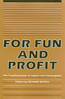

<body bgcolor="#FFFFFF" text="#000000" link="#0000FF" vlink="#CC0000" alink="#CC0000"><center><hr width="350" size="1" align="center" noshade>Essays explore the transformation in leisure activity and its effects on class relations in American society<hr width="350" size="1" align="center" noshade><p><a href="https://cdcshoppingcart.uchicago.edu/Cart/ChicagoBook.aspx?ISBN=9780877226765&&PRESS=temple" target="_top">Buy this book!</a> | <a href="https://cdcshoppingcart.uchicago.edu/Cart/Cart.aspx?PRESS=temple" target="_top">View Cart</a> | <a href="https://cdcshoppingcart.uchicago.edu/Cart/Cart.aspx?PRESS=temple" target="_top">Check Out</a></p><p></p></center><!--none//--><h1>For Fun and Profit</h1>
<H2>The Transformation of Leisure into Consumption</H2>
<h3>edited by Richard Butsch</h3>
<P>cloth 0-87722-676-8 $55.50, Mar 90, <FONT COLOR=#990033>Out of Stock Unavailable</FONT>
<br>paper 0-87722-740-3 $33.95, Jun 90, <FONT COLOR=#990033>Available</FONT>
<BR> 288 pp
</P><p>During the nineteenth century, leisure industries emerged to provide recreation and entertainment to Americans of all classes. By the 1920s, commercialized leisure was big business and today most Americans� leisure activities are based upon some purchased commodity (e.g. theater tickets, sports and stereo equipment]. Entertainment has become a multi-billion dollar industry. The essays collected here explore the transformation this wrought in leisure and analyze its effects on class relations in American society.
<BR>&nbsp;<h2>Contents</h2><P>
<p>1. Leisure and Hegemony in America &#150 Richard Butsch
<br>2. Pessimism vs. Populism: The Problematic Politics of Popular Culture &#150 John Clarke
<br>3. Pacifying American Theatrical Audiences, 1820- 1900 &#150 Bruce McConachie
<br>4. "Adopted by All the Leading Clubs": Sporting Goods and the Shaping of Leisure, 1800-1900 &#150 Stephen Hardy
<br>5. Commercial Leisure and the Woman Question &#150 Kathy Peiss
<br>6. Big Time, Small Time, All Around the Town: The Structure and Geography of New York Vaudeville in the Early Twentieth Century &#150 Robert W. Snyder
<br>7. The Movie Palace Comes to America�s Cities &#150 Douglas Gomery
<br>8. The United States Forest Service and the Post-War Commodification of Outdoor Recreation &#150 L. Sue Greer
<br>9. A Historical Comparison of Children�s Use of Leisure Time &#150 Ellen Wartella and Sharon Mazzarella
<br>10. "How Does it Feel When You�ve Got No Food?" The Past as Present in Popular Music &#150 George Lipsitz
<br>11. Home Video and Corporate Plans: Capital�s Limited Power to Manipulate Leisure &#150 Richard Butsch
</P><BR>&nbsp;<H2>About the Author(s)</H2>
<P><b>Richard Butsch</b> is Professor of Sociology at Rider College in Lawrenceville, New Jersey.</P>
<BR><H2>Subject Categories</H2>
<p><A HREF="/tempress/american.html" TARGET="_top">American Studies</a>
<BR><A HREF="/tempress/sociology.html" TARGET="_top">Sociology</a>
</p>
<BR><h2 class="inpageheading">In the series</H2>
<P><I><a href="http://www.temple.edu/tempress/critical.html" onMouseOver="window.status='Click for other books in this series!'; return true;" onMouseOut="window.status=''; return true;" target="_top">Critical Perspectives on the Past</a></i>, edited by <a href="http://www.temple.edu/tempress/authors/benson_memoriam.html" target="_top">Susan Porter Benson</a>, Stephen Brier, and Roy Rosenzweig.
</p><p><i>Critical Perspectives on the Past</i>, edited by Susan Porter Benson, Stephen Brier, and Roy Rosenzweig, is concerned with the traditional and nontraditional ways in which historical ideas are formed. In its attentiveness to issues of race, class, and gender and to the role of human agency in shaping events, the series is as critical of traditional historical method as content. Emphasizing that history is itself an interpretation of material events, the series demonstrates that the historian's choices of subject, narrative technique, and documentation are politically as well as intellectually constructed.</p>
<p align="center"><a href="https://cdcshoppingcart.uchicago.edu/Cart/ChicagoBook.aspx?ISBN=9780877226765&&PRESS=temple" target="_top">Buy this book!</a> | <a href="https://cdcshoppingcart.uchicago.edu/Cart/Cart.aspx?PRESS=temple" target="_top">View Cart</a> | <a href="https://cdcshoppingcart.uchicago.edu/Cart/Cart.aspx?PRESS=temple" target="_top">Check Out</a></p><p><font face="Arial" size="1"><a href="copyright.html" onMouseOver="window.status='Web Copyright Policy';return true;" onMouseOut="window.status=''" title="Web Copyright Policy">&copy;</a> 2015 <a href="http://www.temple.edu" target="new" onMouseOver="window.status='Link to Temple University home page';return true;" onMouseOut="window.status=''" title="Link to Temple University home page">Temple University</a>. All Rights Reserved. http://www.temple.edu/tempress/titles/675_reg.html</font></p>